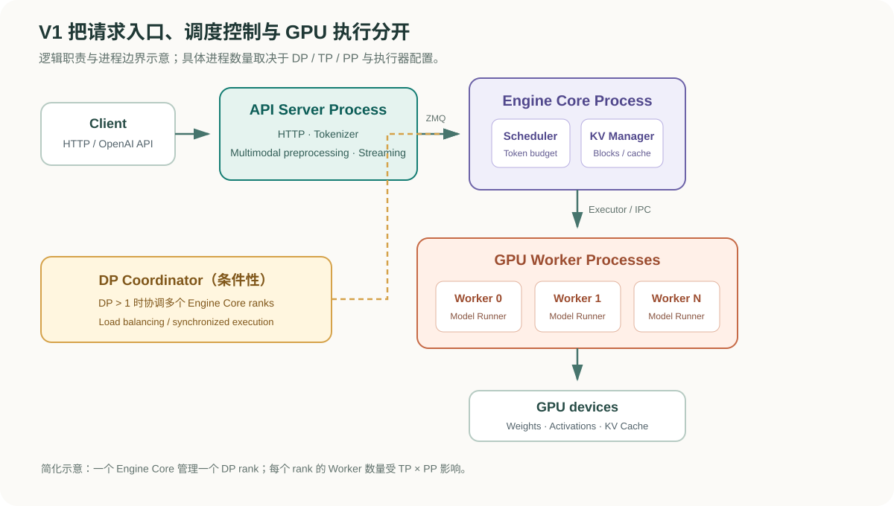
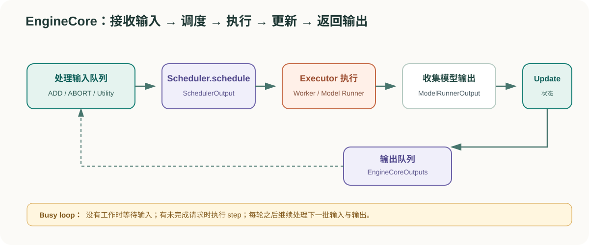

第 12 章 · 调度、批处理与运行时
V1 Process Architecture：从 API 到 GPU Worker
一次 HTTP 请求并不会直接调用 GPU Kernel。它会穿过 API Server、Engine Core、Scheduler、Executor、GPU Worker 和 Model Runner。理解进程边界，才能正确分析 CPU 开销、通信、并行拓扑与故障定位。
把 vLLM 想成一个分工明确的推理工厂：API Server 接收客户订单并准备输入；Engine Core 负责排产、管理 KV Cache 并协调执行；GPU Worker 真正运行模型；当 Data Parallelism 打开时，还有 Coordinator 协调不同 Engine Core。它们不是一个 Python 函数里顺序执行的四行代码，而是具有明确职责和通信边界的运行时系统。
读完这一章，你应该能够
- 画出 V1 API Server、Engine Core、GPU Worker 和 DP Coordinator 的进程关系。
- 解释 Scheduler 为什么运行在 Engine Core，而模型 forward 发生在 GPU Worker。
- 估算典型 TP / PP / DP 配置下的进程数量。
- 沿着
EngineCore.step()追踪 schedule → execute → update 的执行循环。 - 区分 Async Scheduling 与 Pipeline Parallelism 的 Batch Queue。

12.1 为什么要拆成多个进程？
如果 HTTP 请求处理、Tokenizer、KV Cache 管理、Scheduler 和 GPU forward 都挤在同一个进程里，某个阶段的 CPU 工作就可能阻塞其他阶段；GPU 执行和输入处理也难以独立扩展。多进程架构把不同职责隔离开来，让系统可以分别管理 CPU 线程、GPU 资源、进程故障和通信。
V1 的核心设计原则是把控制平面与执行平面分开：
- 控制与调度：收集请求、维护队列、规划本轮 token 和 KV Cache 分配。
- 模型执行：准备张量、执行 forward、采样或产生模型输出。
- 请求入口与结果处理：处理 HTTP、输入预处理、输出反解码与流式响应。
这不意味着每个模块都必须独立部署成微服务。它们可以在同一台机器上通过进程和消息队列协作；进程边界首先是运行时隔离与资源管理边界。
12.2 四类核心进程与职责
| 进程 / 组件 | 核心职责 | 主要输入与输出 |
|---|---|---|
| API Server | HTTP / OpenAI-compatible API、输入校验、Tokenization、多模态数据准备、流式响应 | 接收客户端请求；把 Engine Core 输出整理成客户端可见结果 |
| Engine Core | 运行 Scheduler、管理 KV Cache、组织执行步骤、处理请求状态和结果 | 接收已准备的 EngineCoreRequest；输出 EngineCoreOutputs |
| GPU Worker | 管理单个加速设备上的模型执行环境、权重、Model Runner 和 GPU 内存 | 接收 SchedulerOutput；执行模型并返回 ModelRunnerOutput |
| DP Coordinator | 在启用 Data Parallelism 时协调 DP ranks 的负载和特定同步执行 | 在多个 Engine Core / DP rank 之间协调 |
API Server：请求入口不等于模型执行
API Server 负责接收 HTTP 请求，处理输入并进行 Tokenization；多模态请求还可能涉及媒体加载与预处理。它通过 ZMQ 等 IPC 通道与 Engine Core 交互，随后把输出转换成文本或结构化响应并流式返回。
Engine Core：运行时的控制中心
Engine Core 是 V1 的核心内循环。它拥有 Scheduler 和 KV Cache 管理逻辑，接收请求事件、规划每轮执行，再调用 Executor。每个 Data Parallel rank 对应一个 Engine Core。
GPU Worker：模型真正运行的地方
每个 GPU Worker 管理一个加速设备。Worker 中的 Model Runner 准备模型输入、调用模型 forward，并处理执行相关输出。Tensor Parallel 与 Pipeline Parallel 会让同一个逻辑模型的执行分布到多个 Worker。
DP Coordinator：只有启用 DP 才需要
Data Parallelism 会创建多个 Engine Core rank。V1 架构中的 DP Coordinator 负责跨 rank 的负载协调，并在需要时协调 MoE 模型的同步 forward。它不是每个单 GPU 服务都必然存在的进程。
12.3 单机 TP 与多 DP 拓扑
在官方 V1 多进程架构文档描述的典型配置中，进程数量可以用以下关系建立初步直觉：
GPU Worker 数量 = DP × PP × TP其中 API Server 数量会受 DP 和 --api-server-count 等配置影响；Engine Core 数量对应 DP ranks；DP Coordinator 只在 DP 大于 1 时出现。以下是官方架构文档给出的典型示例：
| 配置 | API Server | Engine Core | GPU Worker | DP Coordinator | 总数 |
|---|---|---|---|---|---|
| 4 GPU，TP=4、DP=1、PP=1 | 1 | 1 | 4 | 0 | 6 |
| 8 GPU，TP=2、DP=4、PP=1 | 4 | 4 | 8 | 1 | 17 |
这个数量关系适用于文档所描述的典型多进程部署拓扑，不是所有启动模式下的通用进程数公式。实际部署还可能包含额外的前端进程、媒体加载线程、监控进程、执行器差异或多节点 Worker。
TP / PP / DP 的区别：TP 把层内张量切分到多个 Worker；PP 把模型层分配到不同 Worker；DP 则复制模型执行实例并行处理不同请求。三者影响的进程拓扑不同，不能只看 GPU 总数来推断请求调度方式。
12.4 EngineCore 的一次执行循环
进程图回答“谁和谁通信”；真正理解运行时，还要跟着一次 Engine Core step 走。当前 V1 的核心 step() 可以概括为：
if not scheduler.has_requests():
return no_outputs
scheduler_output = scheduler.schedule()
future = model_executor.execute_model(
scheduler_output,
non_block=True,
)
model_output = wait_for_output(future)
engine_outputs = scheduler.update_from_output(
scheduler_output,
model_output,
)
return engine_outputs上面是教学伪代码，不是可直接运行的完整实现。它省略了 Grammar Mask、错误上下文、Speculative Decoding、KV Connector、日志统计和其他扩展路径，但保留了 V1 最重要的职责边界：
- Schedule：Scheduler 选择本轮请求和 token，并生成 SchedulerOutput。
- Execute：Engine Core 把计划交给 Model Executor；多进程执行器再把工作分发给 GPU Workers。
- Wait / collect：等待或收集 ModelRunnerOutput。
- Update：Scheduler 根据输出更新 token 进度、请求状态、KV Cache 和完成事件。
- Return：EngineCoreOutputs 进入输出队列，前端处理并返回客户端。
EngineCore 的 busy loop 会先处理输入队列，再执行一个 Engine step，并在执行前后发布必要的请求计数。若当前没有工作，它会等待新的输入，而不是无条件持续执行 GPU batch。

12.5 异步调度与 Batch Queue：两种重叠，不是一回事
在 V1 中，CPU 调度与 GPU 执行之间可以通过不同机制重叠工作，但要区分两个概念：
Async Scheduling：用占位信息提前规划下一步
启用异步调度时，Scheduler 可以在上一轮 GPU 输出尚未完全返回时，基于已知的输出占位信息提前规划后续工作。请求对象会记录 num_output_placeholders 和相关 in-flight 进度；等真实 token 返回后，再把占位状态修正为实际输出。
Batch Queue：为 Pipeline Parallelism 重叠多个 batch
Engine Core 还可以根据 max_concurrent_batches 配置启用 batch queue。这个队列保存已经调度、等待执行或等待输出的批次信息，用于支持异步执行多个 batch，尤其帮助 Pipeline Parallelism 减少 pipeline bubbles。
不要把二者混成同一个开关。Async Scheduling 关注的是 Scheduler 如何处理尚未返回的 token 输出；Batch Queue 关注的是 Engine Core 如何组织多个已调度 batch 的执行与流水线重叠。它们可以在特定配置下共同出现，但概念和实现职责不同。
12.6 V1 与旧版架构阅读边界
vLLM 的内部架构经历过演进。阅读旧文章时，常会看到以旧版 LLMEngine 或旧版 Scheduler 为中心的调用关系；而当前 V1 代码的关键路径围绕 EngineCore、SchedulerInterface、ModelExecutor 和新的 Request / Output 结构展开。
对版本敏感的技术内容，应该同时核对：
- 当前官方架构文档中的进程和职责描述。
- 目标 vLLM tag / commit 中的实际类名和调用路径。
- 启动参数、Executor 模式和并行配置是否改变了默认拓扑。
- 论文或旧版教程描述的是设计动机，还是仍然适用于当前实现的行为。
本章不把 V0 与 V1 简化成“一个快、一个慢”的性能对比。架构重构的价值要从代码边界、请求生命周期、执行器、调度和具体工作负载来理解。
本章自检
- 为什么 API Server 不应该被当作执行模型 forward 的 GPU Worker？
- Engine Core 与 GPU Worker 分别负责什么？
- 为什么 TP=4、DP=1 的典型架构会包含 1 个 Engine Core，而 DP=4 会包含 4 个？
EngineCore.step()中 Scheduler、Executor 和 update_from_output 的先后关系是什么？- Async Scheduling 与 Batch Queue 分别解决什么重叠问题？
下一章把进程架构还原成单条请求的生命周期：请求如何进入队列、获得 KV Cache、被执行、被抢占、恢复、流式输出，最终释放资源。
参考资料与源码入口
- vLLM, Architecture Overview — V1 Process Architecture：API Server、Engine Core、GPU Worker、DP Coordinator 与 Scheduler 的职责。
- 源码：EngineCore、MultiprocExecutor、GPU Worker。
- 调度接口：SchedulerInterface、SchedulerOutput、AsyncScheduler。
源码审校基线：vLLM commit c2fb5c5aba0a904fdbecb8e01b7c41db5bfaeadf。进程数量是典型多进程拓扑示例，不代表所有执行器、启动方式和部署环境下的固定总数。